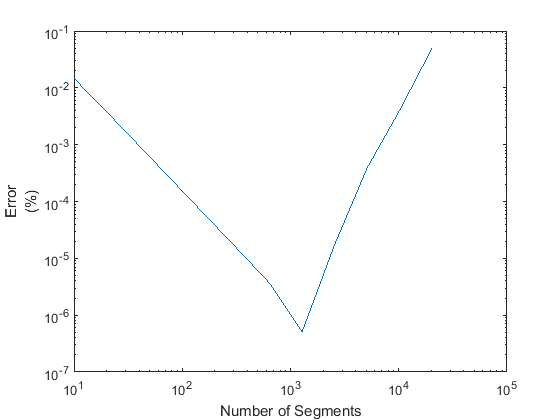
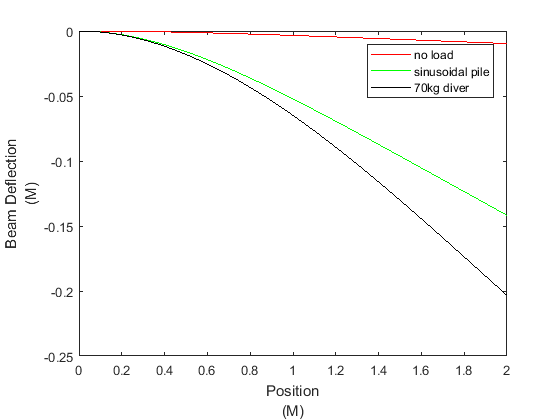
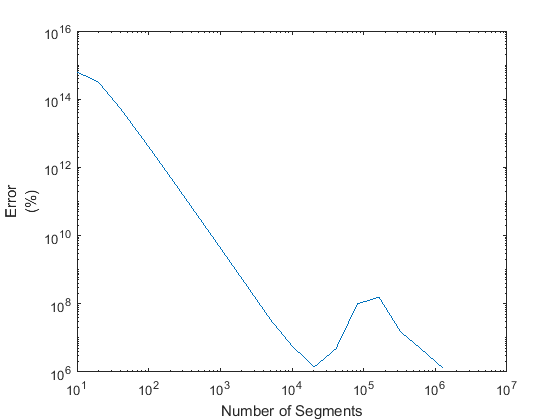

Euler Beam Problem
This problem seeks to model what happens when a material bends under stress.
To show this, we take the Euler-Bernoulli equation and attempt to discretize it.
There is an error associated with discretization, and for our discretization
we are dividing the beam into a union of many segments of length h, which will
give us a sequence of linear equations, which is shown in a matrix. We can then
compare our results from discretization (which has an associated error) against the
correct solution and determine which value of h results in the most accurate discretization.Functions can be found here and all source code can be found in this GitHub repo.
Setup
%First, we need to set our constants for use in the entire rest of %the project %Beam is a constant 2 meters long L= 2; %Gravitational constant g = 9.81; %Beam is a constant 30cm wide w = 0.3; %Beam is a constant 3cm thick d = 0.03; %Young's modulus and the area moment of inertia - always used together EI = (1.3 * 10^10) * (w * d^3 / 12);
Part 1
% Define a matrix which allows us to solve for the displacements using n=10 grid steps. noload = @(x) -480 * w * d * g; y = eulermx(10, noload)
y = -0.000180624738462 -0.000674847507692 -0.001416986584615 -0.002349087507692 -0.003420923076923 -0.004589993353846 -0.005821525661539 -0.007088474584616 -0.008371521969231 -0.009659076923077
Part 2
% Plot the solution from Part 1 against the known correct formula % for a Euler Beam with no load noloadc = @(x) (noload(x) / (24*EI)) * x^2 * (x^2 - 4*L*x + 6*L^2); plotcompare(10, noload, noloadc);
Part 3
% Rerun the calculation for a number of exponentially increasing n % values, comparing and plotting the error for each value n = 10; k = 11; ns = n * arrayfun(@(x) 2.^x, (0:k))'; e = errorcomp(ns, noload, noloadc); c = condcomp(ns); errortable(ns, e, c) loglog(ns, e);
ans =
12×3 table
n error condition
_____ __________ __________
10 6.6093e-16 33254
20 4.0575e-15 5.303e+05
40 1.9687e-13 8.4493e+06
80 1.3385e-12 1.3482e+08
160 1.5524e-11 2.1539e+09
320 3.746e-10 3.4435e+10
640 8.2035e-10 5.5073e+11
1280 4.2696e-09 8.8099e+12
2560 1.7006e-07 1.4094e+14
5120 3.797e-06 2.2549e+15
10240 3.9358e-05 3.6176e+16
20480 0.00049639 6.1571e+17
Part 4
% Prove that the given formula for a sinusoidal load properly % fulfills all requirements for a Euler Beam
Part 5
% Calculate error values for the sinusoidal load and use them to % determine the optimal value of n to get maximum accuracy sinload = @(x) noload(x) - 100 * g * sin(pi * x / L); sinloadc = @(x) noloadc(x) - (100 * g * L / (EI * pi)) * (L^3 / pi^3 * sin(pi / L * x) - x^3 / 6 + L / 2 * x^2 - L^2 / pi^2 * x); e = errorcomp(ns, sinload, sinloadc); errortable(ns, e, c) loglog(ns, e);
ans =
12×3 table
n error condition
_____ __________ __________
10 0.0020828 33254
20 0.0005377 5.303e+05
40 0.00013546 8.4493e+06
80 3.3931e-05 1.3482e+08
160 8.4865e-06 2.1539e+09
320 2.1164e-06 3.4435e+10
640 5.1829e-07 5.5073e+11
1280 7.2107e-08 8.8099e+12
2560 2.4803e-06 1.4094e+14
5120 5.5817e-05 2.2549e+15
10240 0.00057853 3.6176e+16
20480 0.0072957 6.1571e+17
hs = arrayfun(@(n) L/n, ns); loglog(ns, hs.*e);
Part 6
% Replace the sinusoidal load with a 70kg diver on the last 20cm % and plot the resulting Euler Beam n = 1280; diverload = @(x) noload(x) - ((x >= 1.8) * 70 / 0.2 * g); h = L/n; x = (h:h:L)'; y1 = eulermx(n, noload); y2 = eulermx(n, sinload); y3 = eulermx(n, diverload); max_deflection = [y1(end) y2(end) y3(end)]' plot(x, y1, 'r', x, y2, 'g', x, y3, 'k');
max_deflection = -0.009659099207968 -0.141759506430763 -0.203411572381376
Part 7
% Modify the coefficient matrix to fulfill conditions for a % clamped-clamped beam, then repeat part 5 for this beam sinloadbc = @(x) (noload(x) / (24 * EI())) * x^2 * (L - x)^2 - (100 * 9.81 * L^2 / (pi^4 * EI())) * (L^2 * sin(pi / L * x) + pi * x * (x - L)); y1 = bridgemx(n, sinload); y2 = eulerfn(n, sinloadbc); plot(x, y1, 'r', x, y2, 'b'); n = 10; k = 17; ns = n * arrayfun(@(x) 2.^x, (0:k))'; e = bridgeerrorcomp(ns, sinload, sinloadbc); c = condcomp(ns); errortable(ns, e, c) loglog(ns, e);
ans =
18×3 table
n error condition
__________ __________ __________
10 0.0014178 33254
20 0.00070868 5.303e+05
40 0.00012187 8.4493e+06
80 1.7271e-05 1.3482e+08
160 2.2845e-06 2.1539e+09
320 2.9336e-07 3.4435e+10
640 3.7156e-08 5.5073e+11
1280 4.6748e-09 8.8099e+12
2560 5.8619e-10 1.4094e+14
5120 7.2365e-11 2.2549e+15
10240 1.2453e-11 3.6176e+16
20480 3.174e-12 6.1571e+17
40960 1.0747e-11 1.7145e+19
81920 2.2523e-10 9.1623e+19
1.6384e+05 3.5116e-10 9.9647e+19
3.2768e+05 3.3953e-11 1.5188e+20
6.5536e+05 9.997e-12 3.0177e+20
1.3107e+06 2.8024e-12 5.2493e+20

hs = arrayfun(@(n) L/n, ns); loglog(ns, hs.*e);